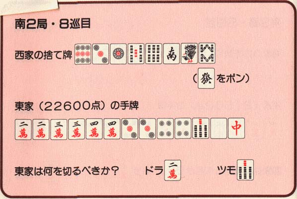
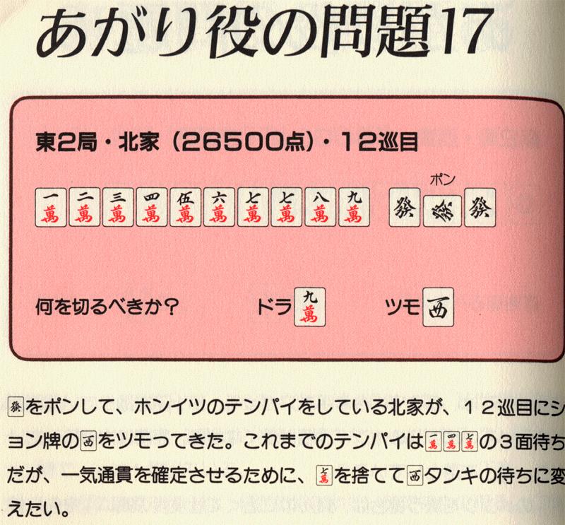
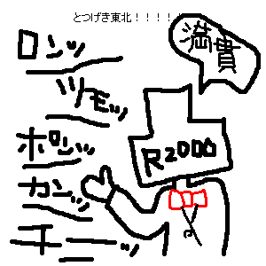
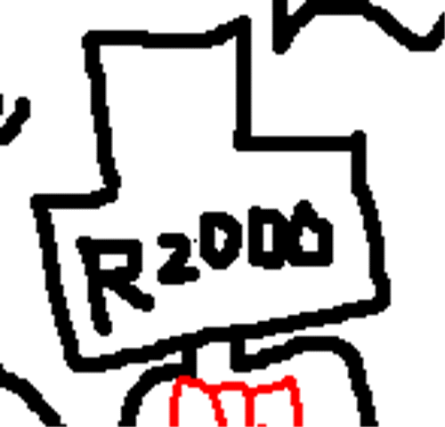
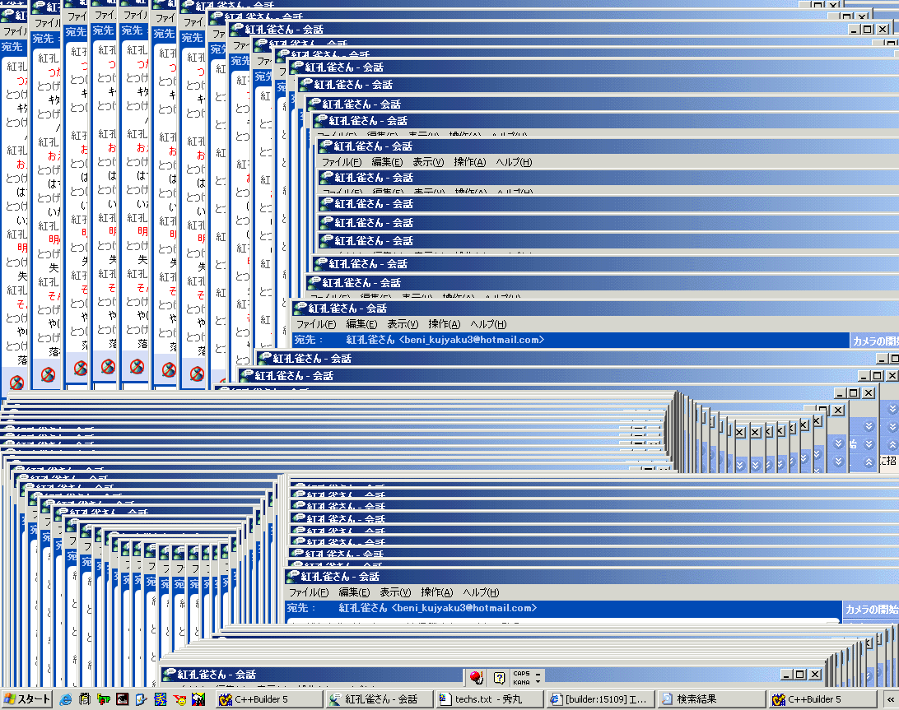

毒と笑いととつげき東北
〜〜過去の雑記〜〜 （日記ペース無理なんで雑記に名称変更）
12）02/09/30〜03/01/02分
11）02/07/08〜02/09/29分
10）02/01/07〜02/07/08分
９）01/08/30〜01/10/30分
８）01/06/20〜01/08/25分
７）01/05/09〜01/06/12分
６）01/03/02〜01/05/03分
５）01/02/06〜01/03/01分
４）00/12/30〜01/02/05分
３）00/12/22〜00/12/29分
２）00/12/14〜00/12/21分
１）00/11/24〜00/12/13分
03/03/12
某元最高位トッププロの戦術書
昔買った麻雀の戦術書が出てきたので読んでみた。

ちょうど７ソウを引いてテンパイだが。どれを切りますか？ リーチしますか？
まぁ、白か中を切るといいだろうね。9600あるから、警戒されそうならリーチはしなくてもいいかもしれない。
では、プロのありがたい解説を読んでみよう。
「
早々と発をポンしている西家がワンズのホンイツを狙っている気配。
（中略）
白と中はどちらもション牌で、大三元や小三元まで考えれば最も危険な牌だ。
こんなときは、現物の３ピンをトイツ落としで、イーシャンテンに戻して打とう。そして、白か中を重ねたら、もう一方のタンキ待ちにすればいい。
」
ドヘタ。
８順目に発ポンが入ってるだけの他家の大三元を警戒して、マンガンクラスのテンパイを崩してたら何もできんわ(笑)。
他のページでも同じようにひどい打ち方が繰り返される。
・メンタンピンドラドラの絶好の1シャンテンになっているのに、6順目で「下家に123ソウ部分をチーされているから、3マンや3ピンを切るのは三色に危ない」という理由だけで、手を崩す。
・7順目に9マンをポンしただけの他家の、ホンロウ・トイトイを警戒して降りる。
・9順目に7種しかない状態から、「他家が怖いので」国士狙いを推奨する（絶対あがれんわ。しかも、国士狙う間に何枚危険牌引いてくると思ってるんだ・・・）。
・10順目に、他家のコクシテンパイを警戒してテンパイを崩す（それなら全局、タンピンドラドラを警戒して降りろ）。
しかもほとんど全ページに渡ってこの調子なのである。上ランから出直してこい。
その上この戦術書には、符点計算の方法は載っているくせに、符点から得点を算出する方法が載っていないというお粗末さである(笑)。
点数計算ができるようにはならないが、そのかわりに無駄に符点とかいうわけわからん知識だけがつくのだ。
なにが「わかりやすい点数計算」やねん。おれが本気で1ヶ月かけて取り組んでも、この本だけからは点数計算できるようにならんわ。
ひでぇ本だなぁと思っていたら、極めつけはこれ。

ちょっと！ 自分で書いたドラ忘れてるよ！
発ホンイツドラ１だけでマンガンになるよ！
一気通貫いらんで！！
違う。
03/03/01
最強
『
サッカー日本代表でイタリア１部リーグのセリエＡ・パルマに所属する中田英寿選手（２６）が、自身の公式ホームページ（ＨＰ）にイラク戦争反対のメッセージを掲載、反響を呼んでいる。イタリア語で「愛」「平和」と書いただけのシンプルなものだが、ＨＰには若者らから「平和の意味を改めて考える機会になった」などの声が寄せられている。
』
（Yahoo!トピックスより引用）
何があってもそんな声を寄せるな。
末代までの恥さらしかてめぇは。というか最強。
その程度のものを見ただけで改めて考える機会になっちゃう奴は、これまで決して平和の意味を真面目に考えたことがないし、これからも考える能力がない。
03/02/27
似顔絵
なんと霞隊の隊長さんが、おれの似顔絵を描いてくれた。
「頭が良くて麻雀が強く、ハンサム」と有名なおれのこと、さぞや男前に描かれていることだろう。
期待しよう。

・・・え？
ちょっと待って？

なんですかこれは？
人ですか、あるいは理科室の分銅（2kg）ですか？
あと、暴れていいですか？
03/02/08
そういえば
うちの家系はイベントごとに弱い。
クリスマスだろうが正月だろうが、平素と全く変わりない毎日を送りがちである。
今年の正月、親に電話して「おめでとう」といったら、おかんは「・・・？ ありがとう」などと言っていた。
何がありがたいのか。
はやく、「明けましておめでとう」と言い返したらどうか。
このような環境に育ってこそ、我々は強くなれるのである。
03/02/06
正露丸
最近下痢になってしまったとき、この薬が非常に効いた。
昔からだが、下痢に正露丸は真に効く。
私は元々おなかが弱いので、正露丸は手放せない必須アイテムである。
デートに行くときでもこっそり2〜3粒はポケットに忍ばせておきたい。エチケットとして。
ところで正露丸の効能をご存知だろうか？
「下痢、食あたり、水あたり・・・むし歯痛」
むし歯にまで効くとは！ まさにいたれりつくせり。
ちなみに正露丸は「くさい」とよく言われるが、私は鼻がおかしいのだろうか？ けっこうあのにおい好きである。
というか子供の頃あのにおいが好きで、こっそり親の目を盗んで薬だなの正露丸を繰り返しかいでいた。なんとなく底知れぬ罪悪感を感じながら。
まあそれはともかく、虫歯と正露丸の関係に戻ろう。
説明書によると、虫歯になっている歯に、あの正露丸を直接つめこむようだ。
ん？ そういえば今まさにむし歯が痛い。
さっそくだ。やってやろうじゃないか。
「何事も、実際にやってみなければわからない」などと言うだけ言って何もしない人と違い、私は対象がムダなことであればあるほどムダに本気でやってしまう性格なのである。
じゃあさっそく、正露丸を歯につめてみよう。
・・・。
・・・・・・。
痛てええええええええええええええええええええええええええ！！
何が痛いって、虫歯じゃないんですよ。
正露丸が痛いんですよ。
どういうことかわからない？
ええ、わからないでしょうとも。
正露丸があまりにも劇薬だからか、舌とか口腔に汁がつくとめちゃくちゃヒリヒリしみるんですよ。
まったく我慢できません。できるはずがありませんこの痛さ。
急いで口をゆすいできました。
そら、こんだけ舌がヒリヒリしとったら歯が痛いくらい気になれへんわ！
風邪の諸症状を緩和、とか言うて相手を包丁で滅多刺ししとるようなもんやろが！
でも、むし歯の痛さはなくなった気がする。これでプラシーボ効果だったら、はらいせに大量の正露丸を町内の隅々にまくが。
まだサンプルが私1人と足りない。
ぜひ、みなさんも科学の発展のために追試して、報告してくれると幸いである（おれだけこんな痛さ味わってたまるか←）。
（注：正露丸は大変よい薬です。批判の意図はありません 笑）
03/02/05
10年後のWINDOWSは、こんなにたくさんの処理を同時に行えます！

・・・などという宣伝文句は絶対にやめてほしい。
「10年後のWINDOWSは軽快で、こんな状態になったりしません」という宣伝を心から希望。
03/01/28
ダウンロード状況
下の日記が軽く企画倒れっぽいので、とりあえずHPで配布しているソフトのダウンロードカウンタでも公開してみる。
ネタがないのよ(笑)。
03/01/12 6:27から03/01/28 22:25までおよそ16.8日でのダウンロード数人気ランキング
| ソフト名 | DL数 | 1日あたりダウンロード数 |
| できすぎくん（最新版） | 589 | 35 |
| 高橋名人 | 481 | 29 |
| ツモツモ君 | 340 | 20 |
| VNCrypt | 203 | 12 |
| VNCrypt.dll | 69 | 4 |
| できすぎくん（旧版） | 49 | 2.9 |
| WinPTA | 25 | 1.5 |
| FileSHA | 8 | 0.5 |
なおこの間のHP来訪者数は1日あたり704HIT。
けっこう、思ったより利用者が多いんだなぁと思った。全体的に。
高橋名人の健闘や、ツモツモ君のDL数は納得できるのだが、できすぎくん（旧版）がなぜ1日3つもダウンロードされる？
何に使ってるねん(笑)
03/01/20
コンテンツ募集
友人の紅孔雀さんがHPを閉じてしまった。
けっこういいHPだったので残念である。
内容的にも「ツモツモ君」の公開やら、プログラミング関係のコンテンツなど、自分的に「ほ〜楽しそう」というコンテンツが多かった。
紅孔雀に限らずだが。
いい内容のコンテンツや、人気のある日記を、うちのページのコンテンツにしてみませんか？
つまりうちのページに置くか、またはうちのページのトップからでかでかとリンクを張るみたいな。
今トップページにある「現在のオススメコンテンツ」というのがこれ！
ここに自分のコンテンツなどにリンクしてみませんか？
例えば東風関係であれば、白☆takasiの日記のように、マージャン関係で気合入れて書いてある日記だとか。
takasiの日記などは需要も多いと思うし、もっと多くの人が見ると楽しいだろうに。
うちはHP自体のHIT数がおよそ600〜650／1日程度あるので、流入が期待できる（もちろん2ちゃんねらーもだが(
≧∇≦)ﾌﾞﾊﾊﾊ!）。
ちゃんとカウンターをつけて、どの程度の人がうちから移動しているかなども観察し、ある程度以上のHIT数であれば続行、HIT数がかせげなくなったら終わり、など(笑)
3つまでリンクする予定だが、掲載希望の人と1週間ごとに3位が入れ替わり、などするとちょっと楽しそう(笑)
うちに来た人は面白いページを見つけられるし、相乗効果的にうちのHPのHIT数も増やす策略・・・どうよ(笑)
希望者は掲示板かメールにて。
なお希望は、基本的にはどんなページでもかまいません。
エロ系など、うちのＨＰと無関係の内容のものはダメですが、例えば
・面白いフリーゲームの紹介ページ
・毒舌吐きまくりページ
・東風日記
などなど、色々うけつけまーす
宣伝オンリーな目的でも、少なくとも500人くらいの足跡はつくと思います(笑)
なお、内容のよしあしについて、おれやおれの親しい友人と話し合ってからリンクするか決めます。
基本的に「うちに来る人のうち多くの人に需要がありそうかどうか」がポイントと考えてください。
あと、コンテンツをうちの中に置く方法については、人気よりもむしろ（おれの好みも含めた）内容のみで判断いたします。
白☆takasiの日記レベル、またはヒトシンカやルシッフルや紅孔雀やバイマンキンのコンテンツレベルならおきます。
ん？ 企画倒れ？ そんなこともあります(笑)
03/01/18
なんやねんこいつらは！
昔からすごく不満なことの一つに、「平均人は右と左の概念をしばしば取り違える」ということがある。
普通の状況で「右」「左」を答えれば、1000回答えて1回もミスしない自信（というほどのもんでもないが 笑）があるのが普通だと思う。
しかし、けっこう多くの友達（半数近く）が、けっこうな確率で（20％とか）、右と左を間違えるというのが不可思議でたまらん。
「ここどっち？」などと聞き「左」と言われ、左に曲がる。「あ、ごめん右だった」
待てや！！！
お前の与えた情報は、運のみで言うても半々で当たる程度の情報やねんぞ！ それでお前70％くらいしか正しくないってどうなのよ！！！
本当に困るのである。
私は友達に対して「この友達は注意」「この友達は安心」などの各種データを取り揃えてある(笑)
70％程度しか「右、左」を言えない人には、必ず「左じゃなくて、右やな！？」のように確認してから判断を下すようにしている。
気をつけてほしい。そんなの間違うはずない、と思っている君たち。
おれは自分で、毎回右左を言うたびに「確かに今回も間違わなかった」とデータを取っているが、「自称間違っていない」人は、けっこう間違っているかもしれない(笑)
あのバイマンキンでさえ、今まで2度ほど間違ったことがあるのだから(
≧∇≦)ﾌﾞﾊﾊﾊ!
ところで、「ノーテンリーチしていないのに、ツモツモ君が青くなった」などの報告をたまにうける。
私は上記のようなことを考えると、そもそもこういう報告を信じることができないことを許して欲しい(笑)。
彼らは「テンパイか、ノーテンか」の概念的差異を果たして正しく理解できているのか？
「赤」と「青」を間違ってはいまいか？
そういう心配がふと、心をよぎってしまうのである。
※以下の2つの日記は、そのうち黒とつの方に移動するかも。
※ＨＰの内容を系統的に区分してみようかとも考えてます。
03/01/08
信者と言ってあざ笑うこと 〜もっとも単純な「信仰比較術」〜
うちの掲示板での議論について前回触れた。
その時の議論にも出てきたのが「信者」という言葉である。
おれについては、「信者」とか「宗教」などの言及がついて回ることが多い。
ラディカル（原理的なことを、ズバズバと言うこと）であれば、その内容は（原理的であるがゆえに）常識的ではなく、常識的でない考えに対する賛同者は「宗教的だ」と捉えられるのは自然である。
「常識的でない」＝「他ではあまり言われていない」ことだから、おれ以外の誰かではなく、おれに賛同するという結果になる。
また、常識的でないために、反対者も当然数多く現れ、そして賛同者を「宗教的」の一言で片付けることも、ごく自然な流れである。
ラディカルな人間とそれを取り巻く人々が、「宗教」のような「集中性」（別の誰か/どこかではなくその人/そこに集まるという傾向）を持つことと、「宗教」のような「非-普通性」を持つ構造があるのは確かである。
だが、「宗教」とか「信者」の一言で片付けるのは、あまりに稚拙ではないか？
凡辞苑の「信者」の項目には次のようにある。
「
信者：嫌いなものを賞賛する人に貼るレッテル。→宗教
」
普通と違うものを「宗教」と見なしてしまって無視or卑下するだけでは、普通の水準を越えられない。
客観的な判断をもとに「普通よりもダメ」であるからというならともかく、その理由が「嫌いだから」では、科学者に対して「あなたは科学教信者だ」などと批判してる宗教家と同じではないか。
しかしながら、普通人がする「宗教」との指摘は、常に、徹底的に考えられた結論であるというよりはむしろ単に「自分の好まない、賞賛されているものに対する反発」でしかないものなのだ。
実例を挙げれば、私の母はあらゆる「宗教」を「宗教を信じるのは、バランス感覚がないから」と言っていたが最近は宗教に入った。その宗教は他の宗教とは違って優れているらしい。
「自分の好まない、賞賛の対象」ではなく、逆にもしたまたま「自分の好むラディカルなもの」が現れたら、こういった人は我先にとその「信者」になる。
理屈でなく好き嫌いで捉えているから、そうなる。
いわゆる「宗教」とはみなされないが、「道徳」という宗教的な風習が異常なまでに熱烈に支持されるのもそのためである。
決して、道徳が理論的に非常に優れたものであるからという理由ではなく（道徳の理論的ダメさは黒とつに示した通り）、多くの人は道徳が好きだから道徳を信じるのである。
これが宗教の形式でなくて何であろうか。
まとめると
・ラディカルな人には賛同者と反対者が集中する。
・その構造は「宗教」のように見える。
・しかし実は、賛同者と反対者のうちいずれの方が妄信的であるかは、必ずしも一般に思われているような分布ではない。
だからおれは、たとえ「オウム真理教」の信者でさえ、一般の人間よりも馬鹿がたくさん集まっているとは思わない。
むしろ、一般の人の中からたまたまオウムに関わる機会があった人が、たまたま入っているのだろうと感じる。
なぜなら、平均人の「分析能力」がオウム真理教信者のそれに対して圧倒的に勝っているなどとはとても思えないほど・・・いや。
多くの人はオウム真理教の上祐氏を馬鹿にしてあざ笑った。ところが、上祐氏とまともに議論して勝てる人などその中に1％いただろうか？
（もちろん、上祐氏が必ずしも正しいとは全く思わないが、それに代えて平均人に何か語らせたら彼の50倍は矛盾した妄想を垂れ流すだろう）
勝てないのになぜあざ笑うのか？ 「宗教だから」という言葉が、いかに平均人に対して甘く作られているかということだ。
その言葉だけで安心するということが、単なる「平均への信仰、平均に寄りかかる安心感」の吐露でしかないことがよくわかる。
ひとつ、非常に簡単に大まかな様子を考える方法があるから提言しよう。
「賛同する人と反対する人の集団のどちらに、より賢い人が多く分布するか」
いや、「賢い」というのは実用上あいまいな基準かもしれない。「この宗教がわからないやつは馬鹿で、この宗教に入る人は賢い」と言えてしまうから訂正しよう。
「賛同する人と反対する人の集団のどちらに、より学歴の高い人が多く分布するか」
まああせるな。確かにこれは全然あほらしい、まるっきり偏差値偏重主義の古い発想ではある。
おれさえも、大きな学歴の隔たりが個人の資質や賢さと同じ関係にあることは、せいぜい3例に2例くらいだということも知っている、いや、5例に3例でもいい。
無名な大学にも優秀なたくさんの学生がいるものだ。
ここで大事なのは「学歴」そのものではない。
「好き・嫌い」から独立した、それらとは全く無関係の、しかしある程度は参考になるであろう指標をもって、何事かに判断を下すという方法論、形式が大事なのだ。
こう考えてみたことはあるか？
「
もし賢さと派閥が無関係だとして、どうして、こっちの陣営には学歴が高くない人がたまたま多く集まるのか？
なぜ、あっちの陣営の周りには、東大・京大をはじめ一流大出身者が驚くほど多いんだ？（おれの仲の良い友達に、東大出身者なんていたっけ・・・）
実は学歴が低い人の方が賢い人が多いのだろうか？
それとも何か、違う理由があるのだろうか？
本当に単に「数学や英語や理科や社会や国語の出来不出来」だけでしか負けておらず、他の知的判断能力では勝っているのだろうか？
」
こんな馬鹿らしい概観でさえ、「好きだから信じる、嫌いだからそれは宗教」と言うよりは10倍くらい信憑性のある観察になるものだ。
というのも、この評価法は平均人が今までしてきた「好き・嫌い」という評価と人生で初めて独立した、「客観的な」評価法だからだ。
あなたが馬鹿だと見なす相手でさえ「好きだから」という理由であなたと違う立場に立つことができるし、「（嫌いだから）あなたは宗教的だ」と言える（対象は何でもいい。常識・道徳・ある思想・とつげき東北etc）のだから、「好きだから」を根拠にするのはやめた方がいい。
もちろん、より良い方法で比較できるならそうすると良い。
データの提示・論理の構築など、方法はさまざまにある。そういうものを提示しても学歴学歴言ってる奴がいたら、学歴批判してやればいい。
しかし、「あれは宗教」「あれはダメ」「あれは馬鹿」で止まっていることは宗教でありダメであり馬鹿である。
03/01/07
真面目に考えること
「価値の相対化」などという恥ずかしい言葉が未だに要所要所で使われるのを見る現代人は、常に自分の判断に注釈をつけたがる。
その注釈とは「これは自分の考えだが」といった断りである。
「自分の考え」でしかなく、他人の価値観とぶつけあう自信さえないでまかせを臆面もなく垂れ流すためには、彼らは注釈をつけねばならないのである。
より洗練された世界、より深い世界においては、「これは自分の考えだが」というような断り書きは出てこない。
例えば理系領域において論文に「自分の考えだが、P=μｔである」などとは書かないものだ。
他人のアイデアと自分のアイデアを真剣勝負させなければならないとすれば、そんな「余裕ぶった態度」では挑めるはずがないのだ。
常に本気であること、真面目であることが要求され、決して茶化してごまかすことはできない（したとしても笑われるだけという厳しい世界が、ある）。
ところで、この「自分の考えでしかない」＝「価値は相対的だよね」＝「全ては絶対ではないよね」という安心感は、逆に全てを平等化・平均化する、「凡庸さ維持装置としての大衆的権力」として作用するということに、我々は注意せねばならない。
つまり、この言葉は構造上、いや、実質的にさえ「道徳」に他ならないのである。
Ａさんが何事かを述べるとする。
Ｂさんが別の何事かを述べる。
ある人はＡさんに同意する。「これは自分の考えだが、Aさんに同意する」というわけだ。
また、他の多くの人も「自分の考えに過ぎないが、私としてはＡさんの主張に賛同したい」などと仰々しく言ったとしよう。
その場の雰囲気は「まあ、どっちが本当かはわからない、絶対ではないが、とりあえずＢさんは変わった考えを持っているな、我々が普通だな」といったものになるに違いない。
その安心感こそが、実に狂信的な、常識的な判断になるのである。まさに道徳の構造、平均人が凡庸たるゆえに常に陥る凡庸な思考の袋小路なのである（これはフーコーが必死で示して見せたことだが、あたりまえのことだ 笑）。
もしも、全員がそこで真面目にＡさんとＢさんの主張を吟味し、データを取り、どちらが正しいかを判断したとして、Ａさん派とＢさん派が半々に分かれたとする。
そして、自分自身は、Ａさんが勝たなければ非常に大きな損害をこうむるとしよう。
そうだとすれば、あなたはきっと、必死になってＡさんの主張がいかに正しいかをＢさん派に「納得させようと」するだろう。
「納得させる」とは、相手の価値観に取り入り、相手の価値を突き崩し、自分の価値を認めさせるという作業に他ならない。
この作業だ。
こういう真面目な作業を伴ってこそ、初めて、我々は自分の「考え・立場」を改めて正しいと認識したり、あるいは誤っていると確認したりできるのだ。
この作業を一切省略し、「なんとなく、その場では負けてないし、負けてもどうでもいいや」という態度で臨むということ、それが宗教への道である。
（例えば黒とつは、このような「納得させる」作業を論理的に実践したものなのだ。「これは自分の考えに過ぎないが、なんたらかんたら」述べたHPと違うのはこの点にある。私はいつでも黒とつの論理に関して、誰とでも本気で議論する用意がある）
「自分の考えでしかない」＝「価値は相対的だよね」＝「全ては絶対ではないよね」という安心感、「相対化を利用した自己価値の絶対化」の典型的な末路について、一例を挙げて考察しよう。
実は私の父と母は、現在ある宗教にのめりこんでいる。
昔よく母がはまっていたオカルトグッズなどに、科学的見地から批判を述べていた私に母が言った言葉は
「科学が絶対ではないし、色々な見方がある。もっと勉強して、広い視点を持ちなさい」
であった。
その結果はどうか？
是非はともかく、母がひとつの「宗教団体に入った」という事実が残ったのである。つまり、科学などはとんでもない、その宗教こそが絶対だ、という妄信の世界に入ったのだ。
私はもはや、その宗教の教義うんぬんをいちいち批判はしない。なるほど、４次元の霊の世界や神の光も時々は実在するのだろう。その宗教がフランスやベルギーで「非常に危険な宗教」として法的に規制されたという事実を勘案してもだ。
ただ、最初の「バランス重視」の立場はどこに行ってしまったのか？ ということだ。
これこそが、先に述べた「相対化を利用した自己価値の絶対化」なのである。
「全ては絶対ではない」ということを、最初は「自分に合わない思想から自分の思想を守る防具として」用い、そのうちに「自分以外の思想を弾圧する武器として」用いてしまう形式。
これは、科学から「心」を守ろうとし、ついには科学批判を始める「道徳」の構造と完全に一致する。
自称「おれは麻雀強い」人の麻雀のレベルを見たことがあるだろうか？
データを取らず、他人と客観的に比較しないがゆえに、彼らはごく平凡なレベルで満足してしまっており、かつ自分は強いと思い込んでいる。
ついには「凸は弱い」と言ってしまうに達する。
何のデータも出せず、単に自分が思いたい方向に思考が流れて行く。
他人と客観的に競争したり比較したりしないこと、「これは自分の考えだが」にすがることによって、宗教は成立するのだ。
少し話が飛んだが、「自分の考えでしかない」という注釈のあり方、この権力の転換形式に、我々はもっと注意して良いのである。
常に本気でないこと、真面目でないことをアピールすることによってしか守られない思想とは、常に宗教であるということを、ここで提言させてもらいたい。
本気でない、他人とぶつけ合わない、そのことで自分の（陳腐な、常識的な、あるいはまた宗教的な）思想を守り、それに寄りかかる他者の態度に対して警戒せねばならないし、また我々自身もそれに気をつけねばならない。
最近うちの掲示板であった議論もそうであった。
「いかに自分は熱くなっていないか」「いかに自分は楽しんでいるだけであるか」「いかに相手は熱くなっているか」といった、非常に低俗なやりとり、「本気でなさ」のアピールに終始した。
「麻雀で勝負しよう！」と言って勝負して、負けたあとで「いや〜適当に打ったからねぇ」と言っているのと全く同じである。
「決着をつけたがらないこと」によって、彼らは彼らの小さな「思想」を守ってみせた。
そこには何の厳しさもなく、何の競争もなく、まさに慢心しきった宗教患者（失礼、信者）の態度があった。
本気ではないにしても、彼らの主張に何か中身があったか？
全くない。
彼らの単なる思い付き、信条、デマの羅列が延々と繰り広げられ、結局のところ「あなたの攻撃は受け付けません、なぜなら私は本気ではないから。でも私は私の考えが好きです」の表明に終わった。
まさに２ちゃん平均レベルだったのである。（ここで私は若い彼らを批判するつもりはない。もし私が彼らの年代だったなら、きっと私も同様の発言をしてしまっていただろうという自信があるから）
「相対化を利用した自己価値の絶対化」、これは現代我々が、あらゆる平均人とのあらゆる議論において直面する宗教である。
もし心から「全ては絶対ではない」ということがわかっていれば、それにわざわざ注釈をつけるようなことはしないはずだ。
我々は「このリンゴおいしいねぇ」と言うとき、「ただしここで、リンゴとは、ここにあるこの白い食物を指す」などと注釈をつけない。「当たり前だ」と認識していることに注釈をつけるということは、ないのだ。
「全ては絶対ではない」「これは私の個人的な考えだが」などということをいちいち述べている時点で、「何か絶対のものがあるのでは？」「客観的な考えというものが存在するのかも？」という無意識の宗教がそこに構造的にあることを意味しているのだ。
そしてたいていの場合、「絶対のもの」「客観的なもの」は、彼らにとって、彼ら自身の直感そのものなのである。